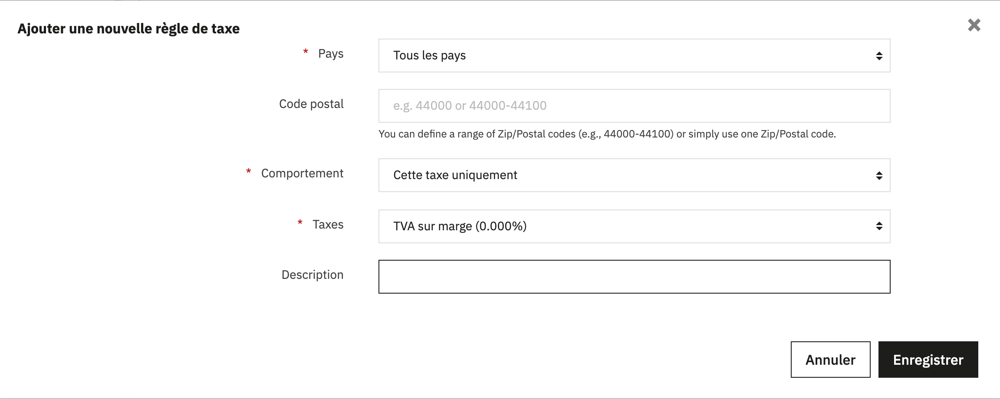
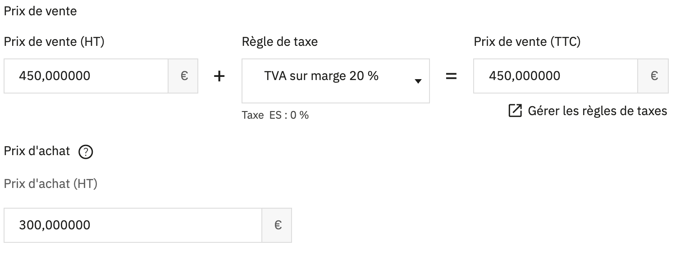
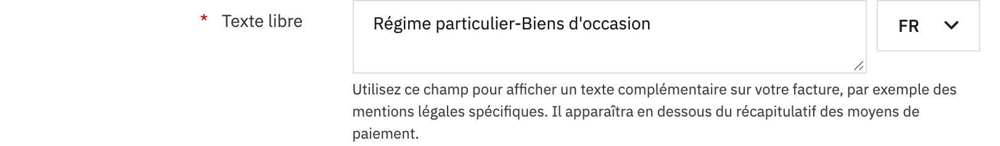
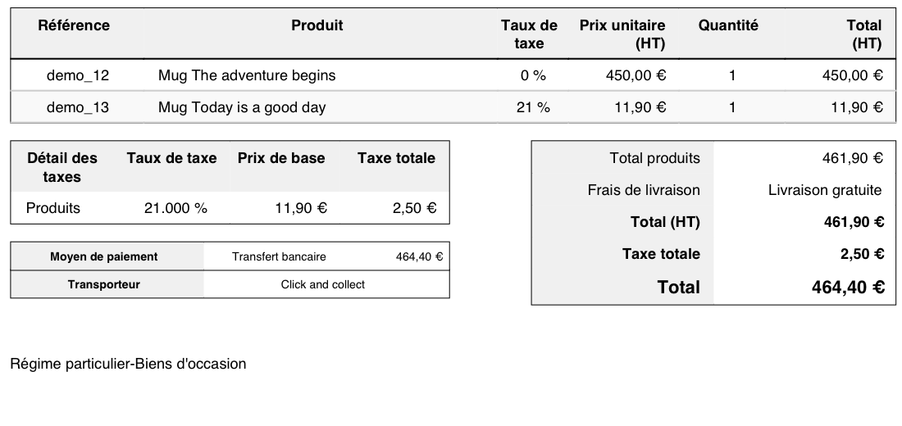

Avant de commencer
Le régime de la marge s’applique aux biens d’occasion que vous avez achetés à quelqu’un qui ne vous a pas facturé de TVA : le cas typique est l’achat à un particulier. C’est donc vous qui indiquez quels articles en relèvent ; aucun outil ne peut le deviner.
La configuration n’utilise que des fonctions déjà présentes dans PrestaShop. Les articles d’occasion sont vendus sans TVA ajoutée, car la TVA sur la marge est comprise dans le prix. La facture porte la mention obligatoire. Chaque vente garde le prix d’achat de la pièce. Et chaque trimestre, vous exportez un fichier de vos ventes pour calculer la base imposable.
Ce guide aide à calculer et à documenter ; ce n’est pas un conseil fiscal. Décider si vous appliquez le régime, à quels articles et comment vous le déclarez relève de vous et de votre expert-comptable. Montrez-lui cette configuration avant de l’utiliser.
Les références changent le 1er janvier 2027. L’ordonnance n° 2025-1247 transfère la TVA du CGI vers le code des impositions sur les biens et services, avec une nouvelle numérotation. Les articles cités ici sont ceux en vigueur aujourd’hui ; nous mettrons ce guide à jour.
La configuration en cinq étapes
Vérifié sur des boutiques de test PrestaShop 9.2.0 (2 octobre 2026, administration en français) et 8.2.8 (3 octobre, administration en espagnol). Les menus sont les mêmes dans les deux versions.
-
Créez une taxe « TVA sur marge » à 0 %
Allez dans International›Taxes et cliquez sur Ajouter une taxe.
- Nom
- TVA sur marge
- Taux
- 0
- Activer
- Oui
C’est indispensable, même si cela paraît étrange : sur la fiche produit, PrestaShop ne propose que les groupes de taxes qui contiennent au moins une taxe active. Un groupe vide n’apparaît pas dans la liste.
-
Créez le groupe « TVA sur marge 20 % »
Dans la même rubrique, ouvrez l’onglet Règles de taxes et cliquez sur Ajouter un groupe de règles de taxes. Nommez-le TVA sur marge 20 %, activez-le et cliquez sur Enregistrer et rester.
Le bouton Add a tax rule apparaît en dessous (il reste en anglais en 9.2). Remplissez la fenêtre ainsi, puis enregistrez :

Pays : Tous les pays. Comportement : Cette taxe uniquement. Taxes : TVA sur marge (0.000%). PrestaShop crée une règle par pays, toutes à 0 %. Sous PrestaShop 8, pas de fenêtre : la règle s’ajoute dans le formulaire affiché sous le groupe, avec les mêmes valeurs (tous les pays), puis on enregistre.
Si certains de vos articles d’occasion relèvent d’un taux réduit, créez aussi TVA sur marge 5,5 % ou TVA sur marge 10 % de la même façon. Le nombre dans le nom est le taux que la calculatrice appliquera à la marge.
-
Attribuez le groupe et le prix d’achat à chaque article d’occasion
Dans Catalogue›Produits, ouvrez l’article et allez dans l’onglet Prix.
- Règle de taxe : TVA sur marge 20 % (ou celle qui convient).
- Prix de vente : le prix final. Comme la taxe est à 0 %, le prix HT et le prix TTC sont identiques ; la TVA sur la marge est déjà incluse.
- Prix d’achat : ce que vous avez payé pour cette pièce. PrestaShop l’enregistre dans chaque commande tel qu’il était au moment de la vente.

Un article de test : vendu 450 €, acheté 300 €, sans TVA ajoutée. Le prix d’achat est unique par produit. Si vous avez plusieurs pièces identiques achetées à des prix différents, mettez à jour le prix d’achat avant chaque vente, ou corrigez-le ensuite ligne par ligne dans la calculatrice.
-
Ajoutez la mention sur la facture
Dans Commandes›Factures, descendez jusqu’à Options des factures et saisissez dans Texte libre :

La mention exigée par l’article 242 nonies A, I-16° de l’annexe II au CGI. Elle s’imprime sur la facture sous le récapitulatif des moyens de paiement. Le champ existe pour chaque langue (sélecteur à droite) : remplissez-le dans chacune, car la facture sort dans la langue de la commande. Quand on installe une langue, PrestaShop recopie le texte existant ; vérifiez-le.
Ainsi, la facture ne fait pas apparaître de TVA sur ces articles, comme l’exige l’article 297 E du CGI. Voyez dans ce que ça couvre à quoi ressemble exactement la facture.
-
Exportez chaque trimestre le fichier des ventes avec le prix d’achat
L’export standard des commandes ne contient pas le prix d’achat. Pour l’obtenir, allez dans Paramètres avancés›Base de données, onglet Gestionnaire SQL, et cliquez sur Ajouter une requête SQL. Donnez-lui un nom, par exemple « Commandes pour la calculatrice TVA sur marge », collez cette requête et enregistrez :
Requête pour le Gestionnaire SQLSELECT o.id_order AS commande, o.reference AS reference, o.invoice_number AS facture, o.invoice_date AS date_facture, od.product_name AS produit, od.product_quantity AS quantite, od.product_quantity_refunded AS quantite_remboursee, od.total_price_tax_incl AS vente_ttc, od.original_wholesale_price AS prix_achat, trg.name AS groupe_taxes, od.tax_rate AS tva_boutique FROM ps_order_detail od INNER JOIN ps_orders o ON o.id_order = od.id_order LEFT JOIN ps_tax_rules_group trg ON trg.id_tax_rules_group = od.id_tax_rules_group WHERE o.valid = 1 AND o.invoice_number > 0 ORDER BY o.invoice_date, o.id_orderDans la liste des requêtes, le bouton Exporter (le nuage) la télécharge. PrestaShop enregistre un fichier nommé
request_sql_1.csv(le numéro varie) avec toutes les lignes des commandes valides qui ont une facture.Si, dans la « Listes des tables MySQL » de ce même écran, vos tables ne commencent pas par
ps_, remplacezps_par votre préfixe dans les trois tables de la requête.
Calculer la base de chaque trimestre
Importez le fichier dans la calculatrice. Elle répartit vos ventes par trimestre (selon la date de facture) et par taux, et donne la base hors taxe et la TVA. Elle reconnaît d’elle-même les lignes des groupes « TVA sur marge » et laisse de côté les produits neufs.
- Marge TTC = prix de vente − prix d’achat.
- Base HT = marge × 100 / (100 + taux), soit la marge divisée par 1,20 au taux normal. Le BOFiP utilise le coefficient arrondi 0,833 : l’écart est de quelques centimes au plus.
- Marge négative : base nulle, sans imputation sur les autres ventes. C’est la règle de la méthode opération par opération, celle qu’utilise la calculatrice.
Vous pouvez corriger le prix d’achat ou de vente de n’importe quelle ligne, décocher celles qui ne relèvent pas du régime et télécharger le détail pour votre expert-comptable. Le fichier est lu dans votre navigateur et ne quitte pas votre ordinateur.
Ouvrir la calculatrice Voir un exemple
Ce que cette configuration couvre, et ce qu’elle ne couvre pas
Nous l’avons testée avec une vraie commande mêlant une pièce d’occasion et un produit neuf, facturée en français. Voici la facture produite par PrestaShop :

Ce qui est réglé
- Aucune TVA n’est ajoutée aux articles sous le régime de la marge, ni celle du pays de destination pour une vente dans l’UE.
- La facture ne fait pas apparaître de TVA sur ces articles et porte la mention obligatoire.
- Chaque vente garde le prix d’achat de la pièce.
- La base de la marge par trimestre et par taux, selon la méthode opération par opération.
Ce qui ne l’est pas
- La facture affiche « 0 % » dans la colonne de taxe de la pièce d’occasion. Ce n’est pas une TVA, mais parlez-en à votre expert-comptable.
- La mention apparaît sur toutes les factures, même celles qui ne contiennent que des produits neufs.
- Les bons de réduction et les frais de port n’entrent pas dans la requête. Si vous en utilisez, ajustez la vente dans la calculatrice.
- La méthode globale, les avoirs, le registre des achats et la facturation électronique. Voyez avec votre expert-comptable comment vous les gérez.
Questions fréquentes
PrestaShop gère-t-il la TVA sur marge en standard ?
Non. PrestaShop calcule la TVA sur le prix uniquement. La demande, l’issue 24231 de son dépôt, est ouverte depuis 2021. Ce guide contourne le problème avec des fonctions que PrestaShop propose déjà.
Pourquoi le groupe s’appelle « TVA sur marge 20 % » si la taxe est à 0 % ?
Le 0 % est ce que PrestaShop ajoute au prix : rien, car la TVA sur la marge est déjà incluse. Le 20 % est le taux que vous appliquerez à la marge dans votre déclaration. La calculatrice lit ce nombre dans le nom du groupe.
Que se passe-t-il si je vends une pièce moins cher que son prix d’achat ?
Avec la méthode opération par opération, la marge négative donne une base nulle et ne s’impute pas sur les autres ventes. La calculatrice l’applique ainsi et vous le signale.
Et si je vends du neuf et de l’occasion dans la même boutique ?
Cela fonctionne : les produits neufs gardent leur groupe de TVA habituel et la calculatrice les écarte. La seule chose que l’on ne peut pas éviter, c’est que la mention apparaisse sur toutes les factures, car le texte libre est le même pour toutes les factures d’une même langue.
Est-ce que ça marche sur PrestaShop 8 ?
Oui. Le guide est vérifié sur PrestaShop 8.2.8 et 9.2.0, avec de vraies commandes et factures. Les menus sont les mêmes ; seule différence, en version 8 la règle de taxe s’ajoute dans un formulaire sous le groupe, pas dans une fenêtre.
Mes commandes sont-elles envoyées quelque part ?
Non. La calculatrice lit le fichier dans votre navigateur et fait les calculs sur place. Rien n’est envoyé ni enregistré sur un serveur. Ce site n’utilise ni cookies ni outil de mesure d’audience.